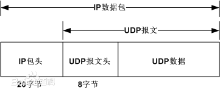

UDP
UDP 是User Datagram Protocol的简称， 中文名是用户数据报协议，是OSI（Open System Interconnection，开放式系统互联） 参考模型中一种无连接的传输层协议，提供面向事务的简单不可靠信息传送服务，IETF RFC 768是UDP的正式规范。UDP在IP报文的协议号是17。
UDP协议全称是用户数据报协议，在网络中它与TCP协议一样用于处理数据包，是一种无连接的协议。在OSI模型中，在第四层——传输层，处于IP协议的上一层。UDP有不提供数据包分组、组装和不能对数据包进行排序的缺点，也就是说，当报文发送之后，是无法得知其是否安全完整到达的。UDP用来支持那些需要在计算机之间传输数据的网络应用。包括网络视频会议系统在内的众多的客户/服务器模式的网络应用都需要使用UDP协议。UDP协议从问世至今已经被使用了很多年，虽然其最初的光彩已经被一些类似协议所掩盖，但是即使是在今天UDP仍然不失为一项非常实用和可行的网络传输层协议。
与所熟知的TCP（传输控制协议）协议一样，UDP协议直接位于IP（网际协议）协议的顶层。根据OSI（开放系统互连）参考模型，UDP和TCP都属于传输层协议。UDP协议的主要作用是将网络数据流量压缩成数据包的形式。一个典型的数据包就是一个二进制数据的传输单位。每一个数据包的前8个字节用来包含报头信息，剩余字节则用来包含具体的传输数据。
协议
UDP是OSI参考模型中一种无连接的传输层协议，它主要用于不要求分组顺序到达的传输中，分组传输顺序的检查与排序由应用层完成，提供面向事务的简单不可靠信息传送服务。UDP 协议基本上是IP协议与上层协议的接口。UDP协议适用端口分别运行在同一台设备上的多个应用程序。 UDP提供了无连接通信，且不对传送数据包进行可靠性保证，适合于一次传输少量数据，UDP传输的可靠性由应用层负责。常用的UDP端口号有： 应用协议 端口号 DNS 53 TFTP 69 SNMP 161 UDP报文没有可靠性保证、顺序保证和流量控制字段等，可靠性较差。但是正因为UDP协议的控制选项较少，在数据传输过程中延迟小、数据传输效率高，适合对可靠性要求不高的应用程序，或者可以保障可靠性的应用程序，如DNS、TFTP、SNMP等。 UDP在IP报文中的位置如图所示。

使用
在选择使用协议的时候，选择UDP必须要谨慎。在网络质量令人十分不满意的环境下，UDP协议数据包丢失会比较严重。但是由于UDP的特性：它不属于连接型协议，因而具有资源消耗小，处理速度快的优点，所以通常音频、视频和普通数据在传送时使用UDP较多，因为它们即使偶尔丢失一两个数据包，也不会对接收结果产生太大影响。比如我们聊天用的ICQ和QQ就是使用的UDP协议。
报头

UDP报头由4个域组成，其中每个域各占用2个字节，具体如下： UDP UDP 1、源端口号。 2、目标端口号。 3、数据报长度。 4、校验值。 UDP协议使用端口号为不同的应用保留其各自的数据传输通道。UDP和TCP协议正是采用这一机制实现对同一时刻内多项应用同时发送和接收数据的支持。数据发送一方（可以是客户端或服务器端）将UDP数据包通过源端口发送出去，而数据接收一方则通过目标端口接收数据。有的网络应用只能使用预先为其预留或注册的静态端口；而另外一些网络应用则可以使用未被注册的动态端口。因为UDP报头使用两个字节存放端口号，所以端口号的有效范围是从0到65535。一般来说，大于49151的端口号都代表动态端口。 数据报的长度是指包括报头和数据部分在内的总字节数。因为报头的长度是固定的，所以该域主要被用来计算可变长度的数据部分（又称为数据负载）。数据报的最大长度根据操作环境的不同而各异。从理论上说，包含报头在内的数据报的最大长度为65535字节。不过，一些实际应用往往会限制数据报的大小，有时会降低到8192字节。 UDP协议使用报头中的校验值来保证数据的安全。校验值首先在数据发送方通过特殊的算法计算得出，在传递到接收方之后，还需要再重新计算。如果某个数据报在传输过程中被第三方篡改或者由于线路噪音等原因受到损坏，发送和接收方的校验计算值将不会相符，由此UDP协议可以检测是否出错。这与TCP协议是不同的，后者要求必须具有校验值。 许多链路层协议都提供错误检查，包括流行的以太网协议，也许你想知道为什么UDP也要提供检查和校验。其原因是链路层以下的协议在源端和终端之间的某些通道可能不提供错误检测。虽然UDP提供有错误检测，但检测到错误时，UDP不做错误校正，只是简单地把损坏的消息段扔掉，或者给应用程序提供警告信息。 UDP Helper是实现对指定UDP端口广播报文的中继转发，即将指定UDP端口的广播报文转换为单播报文发送给指定的服务器，起到中继的作用。
功能
为了在给定的主机上能识别多个目的地址，同时允许多个应用程序在同一台主机上工作并能独立地进行数据包的发送和接收，设计用户数据报协议UDP。
使用UDP协议包括：TFTP、SNMP、NFS、DNS、BOOTP
UDP使用底层的互联网协议来传送报文，同IP一样提供不可靠的无连接数据包传输服务。它不提供报文到达确认、排序、及流量控制等功能。
报文格式
每个UDP报文分UDP报头和UDP数据区两部分。报头由四个16位长（8字节）字段组成，分别说明该报文的源端口、目的端口、报文长度以及校验值。
分层封装
在TCP/IP协议层次模型中，UDP位于IP层之上。应用程序访问UDP层然后使用IP层传送数据报。IP层的报头指明了源主机和目的主机地址，而UDP层的报头指明了主机上的源端口和目的端口。
分解操作
UDP的复用、分解与端口 UDP软件应用程序之间的复用与分解都要通过端口机制来实现。每个应用程序在发送数据报之前必须与操作系统协商以获得协议端口和相应的端口号。 UDP分解操作：从IP层接收了数据报之后，根据UDP的目的端口号进行分解操作。 UDP端口号指定有两种方式：由管理机构指定端口和动态绑定的方式。
特性
（1） UDP是一个无连接协议，传输数据之前源端和终端不建立连接，当它想传送时就简单地去抓取来自应用程序的数据，并尽可能快地把它扔到网络上。在发送端，UDP传送数据的速度仅仅是受应用程序生成数据的速度、计算机的能力和传输带宽的限制；在接收端，UDP把每个消息段放在队列中，应用程序每次从队列中读一个消息段。
（2） 由于传输数据不建立连接，因此也就不需要维护连接状态，包括收发状态等，因此一台服务机可同时向多个客户机传输相同的消息。
（3） UDP信息包的标题很短，只有8个字节，相对于TCP的20个字节信息包的额外开销很小。
（4） 吞吐量不受拥挤控制算法的调节，只受应用软件生成数据的速率、传输带宽、源端和终端主机性能的限制。
（5）UDP使用尽最大努力交付，即不保证可靠交付，因此主机不需要维持复杂的链接状态表（这里面有许多参数）。
（6）UDP是面向报文的。发送方的UDP对应用程序交下来的报文，在添加首部后就向下交付给IP层。既不拆分，也不合并，而是保留这些报文的边界，因此，应用程序需要选择合适的报文大小。
虽然UDP是一个不可靠的协议，但它是分发信息的一个理想协议。例如，在屏幕上报告股票市场、在屏幕上显示航空信息等等。UDP也用在路由信息协议RIP（Routing Information Protocol）中修改路由表。在这些应用场合下，如果有一个消息丢失，在几秒之后另一个新的消息就会替换它。UDP广泛用在多媒体应用中，例如，Progressive Networks公司开发的RealAudio软件，它是在因特网上把预先录制的或者现场音乐实时传送给客户机的一种软件，该软件使用的RealAudio audio-on-demand protocol协议就是运行在UDP之上的协议，大多数因特网电话软件产品也都运行在UDP之上。
对比TCP
UDP和TCP协议的主要区别是两者在如何实现信息的可靠传递方面不同。TCP协议中包含了专门的传递保证机制，当数据接收方收到发送方传来的信息时，会自动向发送方发出确认消息；发送方只有在接收到该确认消息之后才继续传送其它信息，否则将一直等待直到收到确认信息为止。与TCP不同，UDP协议并不提供数据传送的保证机制。如果在从发送方到接收方的传递过程中出现数据报的丢失，协议本身并不能做出任何检测或提示。因此，通常人们把UDP协议称为不可靠的传输协议。
相对于TCP协议，UDP协议的另外一个不同之处在于如何接收突发性的多个数据报。不同于TCP，UDP并不能确保数据的发送和接收顺序。
例如，一个位于客户端的应用程序向服务器发出了以下4个数据报
D1
D22
D333
D4444
但是UDP有可能按照以下顺序将所接收的数据提交到服务端的应用：
D333
D1
D4444
D22
事实上，UDP协议的这种乱序性基本上很少出现，通常只会在网络非常拥挤的情况下才有可能发生。
应用
既然UDP是一种不可靠的网络协议，那么还有什么使用价值或必要呢？其实不然，在有些情况下UDP协议可能会变得非常有用。因为UDP具有TCP所望尘莫及的速度优势。虽然TCP协议中植入了各种安全保障功能，但是在实际执行的过程中会占用大量的系统开销，无疑使速度受到严重的影响。反观UDP由于排除了信息可靠传递机制，将安全和排序等功能移交给上层应用来完成，极大降低了执行时间，使速度得到了保证。
关于UDP协议的最早规范是RFC768，1980年发布。尽管时间已经很长，但是UDP协议仍然继续在主流应用中发挥着作用。包括视频电话会议系统在内的许多应用都证明了UDP协议的存在价值。因为相对于可靠性来说，这些应用更加注重实际性能，所以为了获得更好的使用效果（例如，更高的画面帧刷新速率）往往可以牺牲一定的可靠性（例如，画面质量）。这就是UDP和TCP两种协议的权衡之处。根据不同的环境和特点，两种传输协议都将在今后的网络世界中发挥更加重要的作用。
参考资料
- 刘瑞挺．全国计算机等级考试三级教程网络技术：高等教育出版社，2010：45
- 朱桂英，张元亮编著. Visual C++网络编程开发与实战[M]. 北京：清华大学出版社, 2012.03.第71页
- 王兆青主编. 计算机网络 本科[M]. 北京：中央广播电视大学出版社, 2008.06.第34页